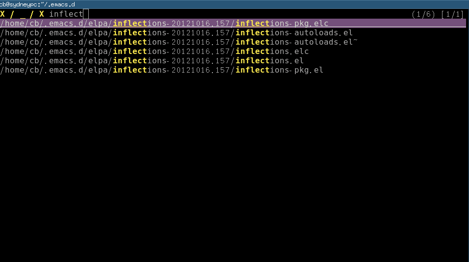
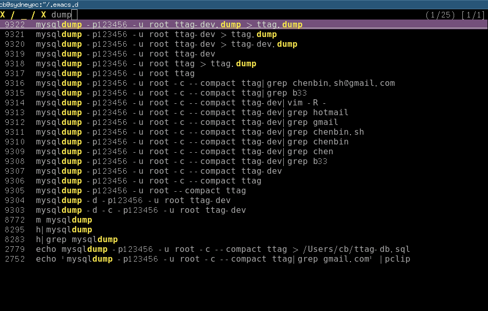

How to do the file navigation efficiently
CREATED:
UPDATED:
The solutin is based on the ideas of top geeks. I only did the implementation.
Mendel Cooper provided the original design in Advanced Bash-Scripting Guide. Masafumi Oyamada (AKA mooz) added the missing piece by creating percol.
Problem
How to find full path of a file by fuzz search?
The path should be shared easily to other application like Emacs.
Installation
Step 1, Install percol
Download the package and extract it. Place the sub-directory named "percol/" into the directory "~/bin". Rename the program "percol" in sub-directory "bin" into "percol.py". Put the percol.py also into "~/bin".
Step 2, Insert below code into ~/.bashrc:
[ $(uname -s | grep -c CYGWIN) -eq 1 ] && OS_NAME="CYGWIN" || OS_NAME=`uname -s`
function pclip() {
if [ $OS_NAME == CYGWIN ]; then
putclip $@;
elif [ $OS_NAME == Darwin ]; then
pbcopy $@;
else
if [ -x /usr/bin/xsel ]; then
xsel -ib $@;
else
if [ -x /usr/bin/xclip ]; then
xclip -selection c $@;
else
echo "Neither xsel or xclip is installed!"
fi
fi
fi
}
# search the file and pop up dialog, then put the full path in clipboard
function baseff()
{
local fullpath=$*
local filename=${fullpath##*/} # remove "/" from the beginning
filename=${filename##*./} # remove ".../" from the beginning
# Only the filename without path is needed
# filename should be reasonable
local cli=`find . -not -iwholename '*/vendor/*' -not -iwholename '*/bower_components/*' -not -iwholename '*/node_modules/*' -not -iwholename '*/target/*' -not -iwholename '*.svn*' -not -iwholename '*.git*' -not -iwholename '*.sass-cache*' -not -iwholename '*.hg*' -type f -path '*'${filename}'*' -print | ~/bin/percol.py`
# convert relative path to full path
echo $(cd $(dirname $cli); pwd)/$(basename $cli)
}
function ff()
{
local cli=`baseff $*`
#echo ${cli} | sed 's%^'${HOME}'%~%'
#echo -n ${cli} | sed 's%^'${HOME}'%~%' | pclip
echo ${cli}
echo -n ${cli} | pclip
}
function cf()
{
local cli=`baseff $*`
local p=`cygpath -w $cli`
echo ${p}
echo -n ${p} | pclip;
}
`cf` is similar to `ff`. It will output Windows path under cygwin.
Usage
Type "ff partials-of-file-path" in shell. A filter window popups. You can filter and scroll down/up to select one file. The full path will be copied into system clipboard automatically (under Linux, either xsel or xclip are required for clipboard access).
The paritials-of-file-path could contain wildcard character.
For example, for "/home/cb/projs/web-portal/app/styles/bootstrap/main.css", you can type either of below command:
ff .../grunt-docs/*bootstrap*css
ff web-port*ma*css
ff styles
Here is the screen shot when I type "ff el" in my ~/.emacs.d: 
You will notice that I input the string "inflect" to filter the result.
I can scroll up/down (press Ctrl-P or Ctrl-N) to select the exact file.
In Emacs community, people try to embed a file explorer into Emacs (Sr speedbar, for example). This solution may make embedded file explorer unnecessary.
Advanced usage
More examples follow.
Search the bash history.
Code to insert ~/.bashrc:
function h () {
# reverse history, pick up one line, remove new line characters and put it into clipboard
if [ -z "$1" ]; then
history | sed '1!G;h;$!d' | ~/bin/percol.py | sed -n 's/^ *[0-9][0-9]* *\(.*\)$/\1/p'| tr -d '\n' | pclip
else
history | grep "$1" | sed '1!G;h;$!d' | ~/bin/percol.py | sed -n 's/^ *[0-9][0-9]* *\(.*\)$/\1/p'| tr -d '\n' | pclip
fi
}
Though grep is quick enough for me, it can be replaced by Silver Searcher.
Screenshot: 
Select a file in git commit
Code to insert ~/.bashrc:
function glsf () {
local str=`git --no-pager log --oneline --stat $* | ~/bin/percol.py`
if [[ $str =~ ^[[:space:]]*([a-z0-9A-Z_.\/-]*).*$ ]]; then
echo -n ${BASH_REMATCH[1]} |pclip;
echo ${BASH_REMATCH[1]}
fi
}
Screenshot:

Summary
The key idea is that I have full freedom to get job done in any way. Emacs is nothing more than a tool to help me achieve more power and more freedom. For example, I find mooz's percol because I like his Emacs plugin js2-mode and I want to check his other works.